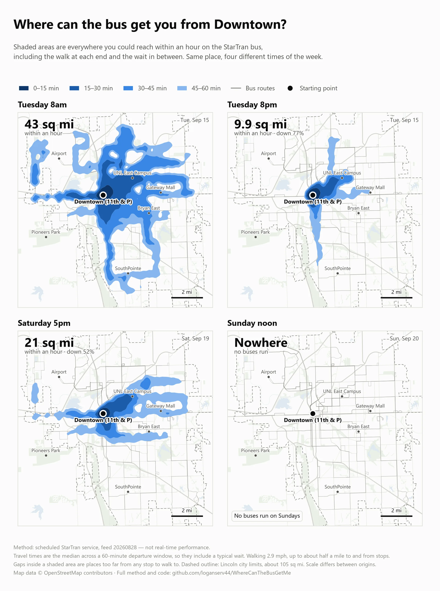
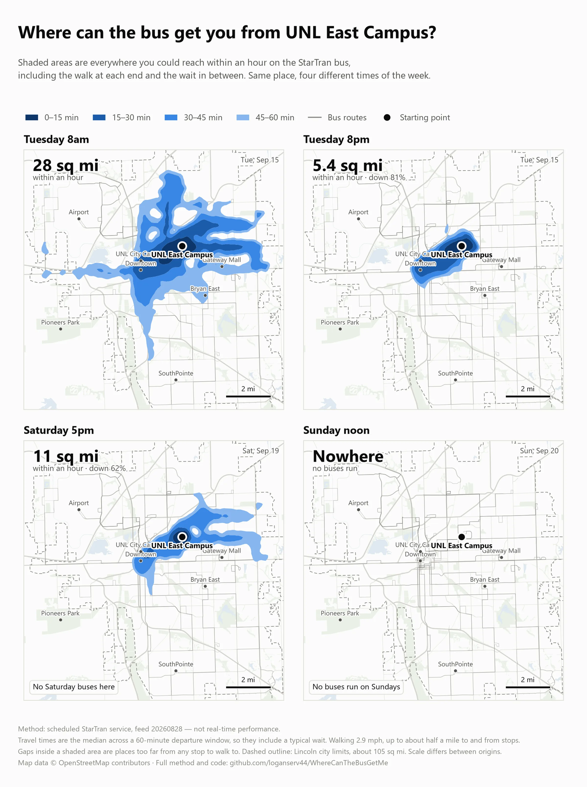
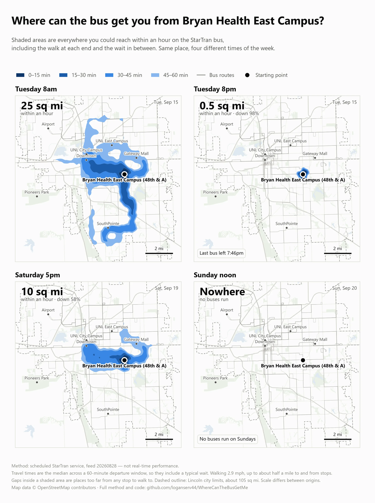
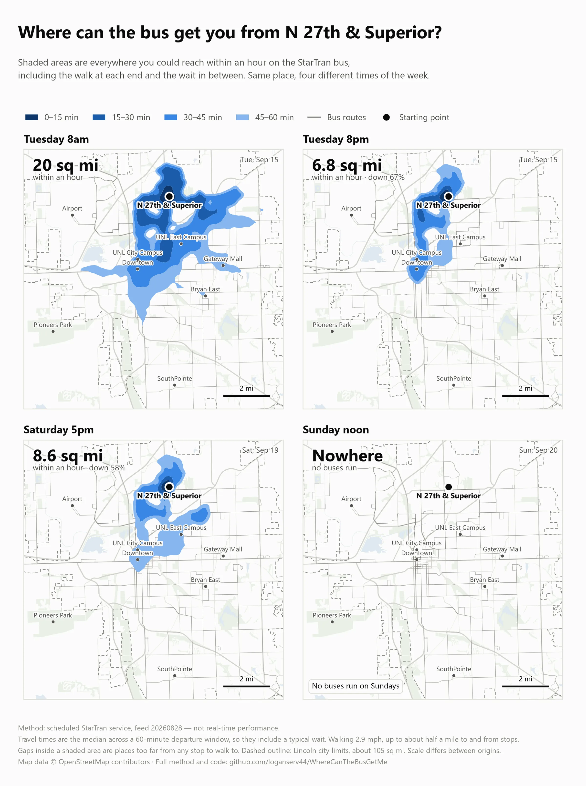
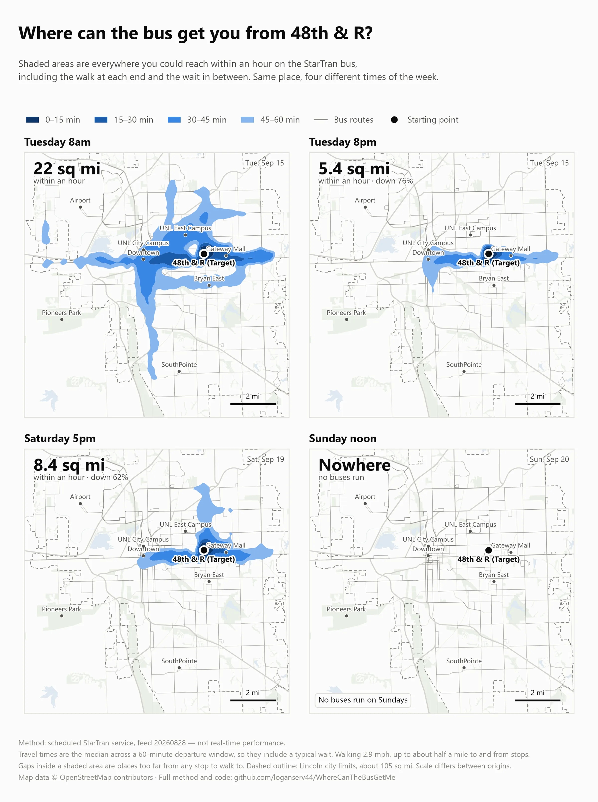
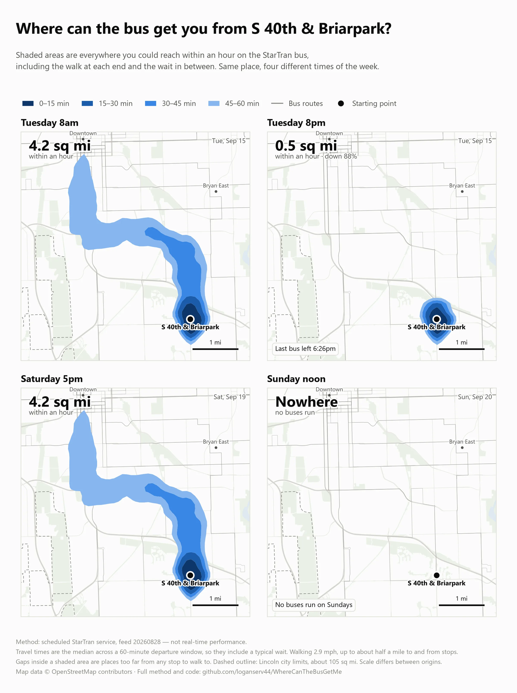

Each figure holds one starting point across four departure times —
weekday 8am and 8pm, Saturday 5pm, and Sunday noon — drawn at one shared scale, so the
change across a week is a matter of looking rather than arithmetic. The Sunday panel is
blank because no StarTran bus runs on a Sunday.
Scale differs between figures, because a stop that reaches 48
square miles and one that reaches four cannot usefully share a view. Every panel carries
its own scale bar. To step through a single origin hour by hour instead,
use the explorer.

Downtown (11th & P). Best case: 315 weekday trips, the most
of any stop in Lincoln. Last bus 9:48pm. Stands in for UNL City Campus, 0.6 miles
away.

UNL East Campus. The student’s stop: 302 weekday trips and none
at all on Saturday, because routes 24 and 25 are weekday-only. Its Saturday panel is
still far from empty — that reach is walked to other stops, not ridden.

Bryan Health East Campus (48th & A). The shift worker’s stop.
The last weekday bus leaves at 7:46pm, which is before a lot of shifts end.

N 27th & Superior. Suburban housing and groceries: 88
apartment buildings and 3 supermarkets within half a mile.

48th & R (Target). Groceries: 4 supermarkets within half a
mile, served by route 44 and its 30 weekday trips.

S 40th & Briarpark. Worst case with service at all: the south
edge, route 56 only, 13 weekday trips, last bus 6:26pm.